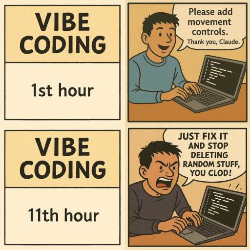

ИИ помощники
ИИ помощники — это программное приложение, которое использует искусственный интеллект для понимания естественного языка и выполнения задач для пользователей.

Сайт со сравнением разных моделей https://lmarena.ai/ и таблица для сравнения https://lmarena.ai/leaderboard.
Еще сайт для сравнения https://scale.com/leaderboard
Доступные ИИ помощники:
| Name | iOS | Android | Комментарий |
|---|---|---|---|
| ChatGPT (OpenAI) | Yes | Yes | Самый универсальный |
| Perplexity | Yes | Yes | |
| DeepSeek | Yes | Yes | |
| Qwen AI (Alibaba) | Yes | Yes | |
| Claude (Anthropic) | Yes | Yes | |
| Gemini (Google) | Yes | Yes | |
| GitHub Copilot (Free) | Via GitHub Mobile | Via GitHub Mobile | |
| Microsoft Copilot | Yes | Yes | |
| Grok (xAI) | Yes | Yes | |
| Meta AI (xAI) | Yes | Yes | |
| Mistral AI | Yes | Yes | |
| Windsurf | No | No | Не доступен в Казахстане |
| Continue.dev | No | No | Плагин для IDE |
| Cursor | No | No | Редактор кода |
| Amazon Q Developer | No | No | |
| Qodo | No | No | |
| GPT4All | No | No | Для работы оффлайн |
| Tabby | No | No | |
| Code GPT | No | No | Плагин для IDE |
| ruGPT | No | No | Требует регистрации. Платное. |
| higgesfield | No | No | Требует регистрации. Бесплатная генерация картинок. |